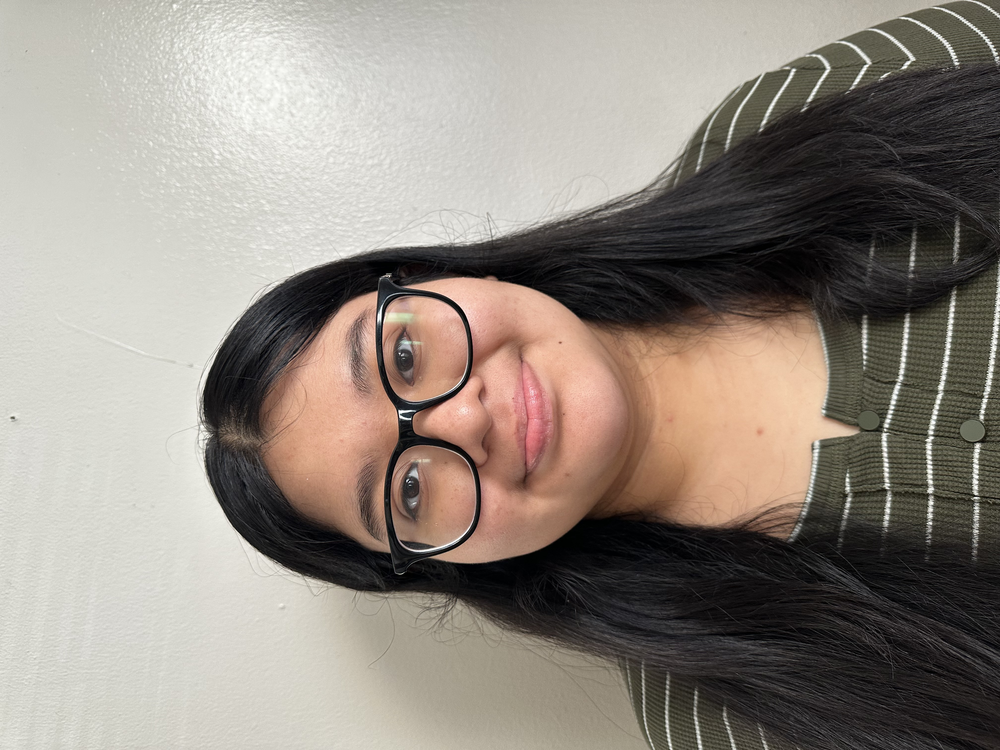

Hello, I am Esteffany and I currently a Junior studying mathematics Mercy university, maintaining a GPA of 3.8.
I have been gaining and learning skills that involve solving complex problems and how to apply them to real life scenarios. Along with this, I have loved learning about the abstract concpets of mathematics.
Besides my academic life, I was born and raised in Yonkers, New York and continue to stay close to home. I have always enjoyed being creative and expressing myself through art. I love to draw, paint, and do crafts during my free time. along with applying creativty to my work.